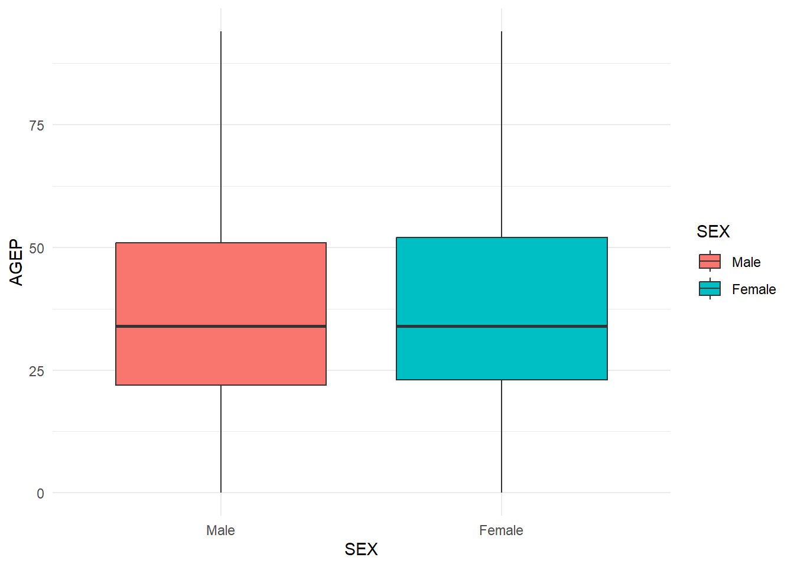
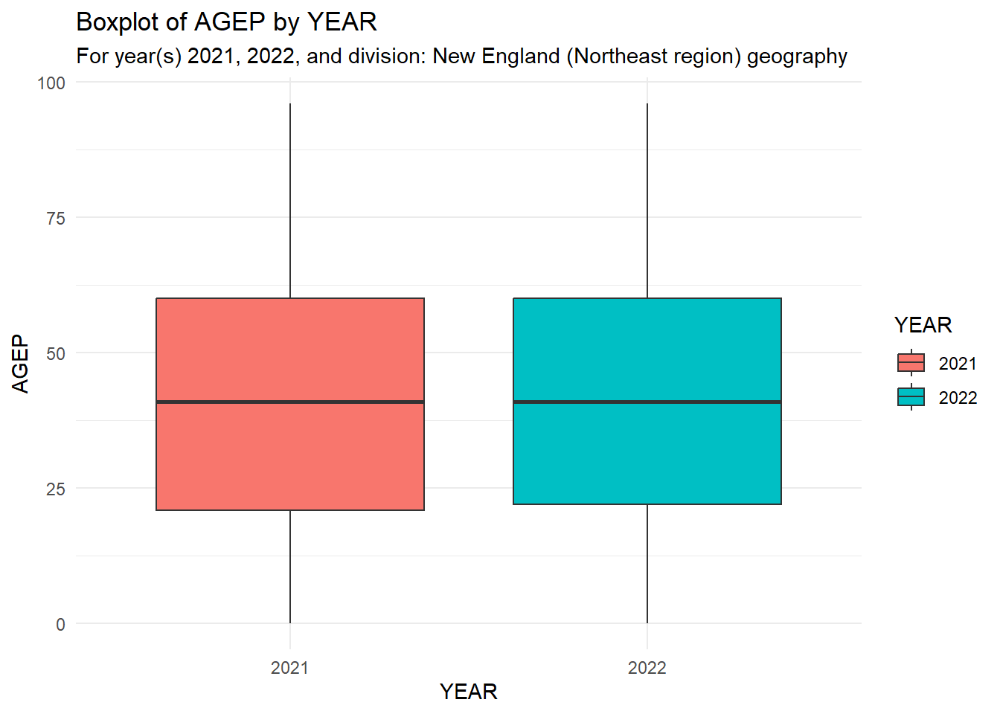
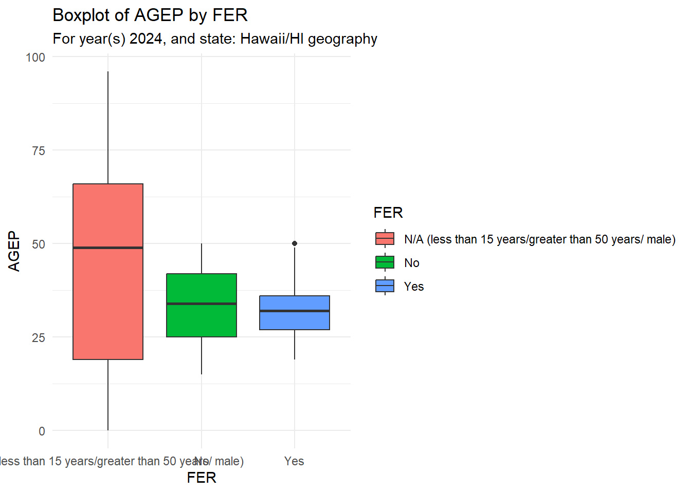
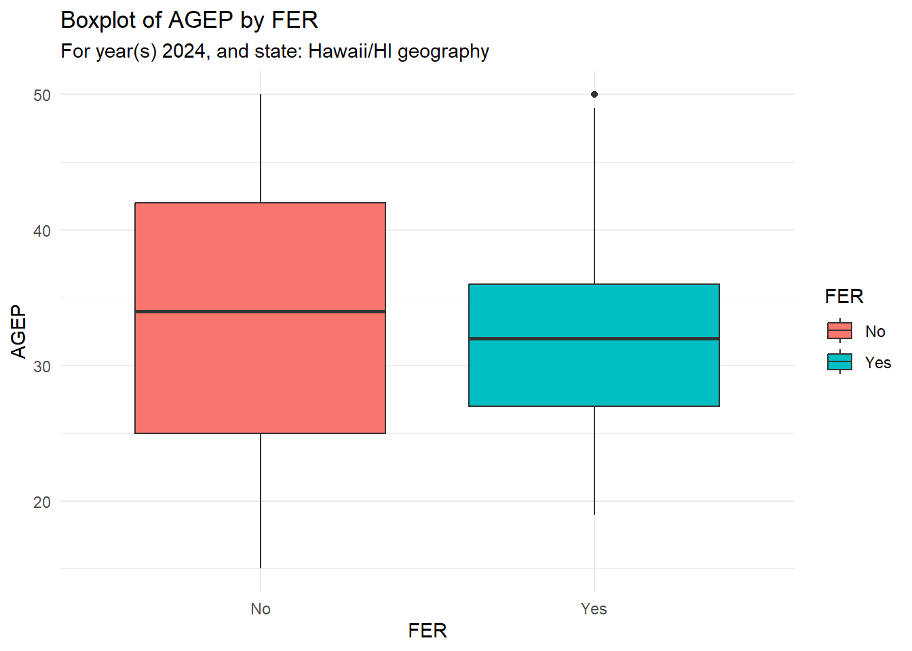

library(tidyverse)
library(jsonlite)
library(ggplot2)ST558 - Project 1
Introduction
This project builds a set of functions for accessing and summarizing data from the Public Use Microdata Sample (PUMS). PUMS is part of the US Census Bureau’s annual American Community Survey.
https://www.census.gov/data/developers/data-sets/census-microdata-api.html
This project was designed to access the 1-Year PUMS data sets for years 2021 through 2024 only. Additionally, PUMS data for Puerto Rico are not included the scope of this project.
Data Processing Functions
Load essential packages.
Define core R objects, used throughout.
my_key <- "07a32887514d391e8f71d7c20274286c27064b18"
all_years <- c("2021", "2022", "2023", "2024")
all_nums <- c("AGEP", "GASP", "GRPIP", "JWAP", "JWDP", "JWMNP")
all_cats <- c("FER", "HHL", "SCH", "SCHL", "SEX")
all_vars <- c("PWGTP", all_nums, all_cats, "ST", "STATE", "REGION", "DIVISION")Variable Values
Most PUMS data are stored as coded values. Online data dictionaries (aka codebooks, or variable value documentation) are available online for each year: 2021, 2022, 2023, and 2024.
This section of the project defines and calls a function to download all applicable dictionaries and store the downloaded files in the project repository. These “dictionary” files are then used throughout the remainder of this project.
getPUMSVars()
This function pulls and parses the online PUMS data dictionary for a given year. All applicable variable names and values are preserved and saved in a year-specific .rda file in the repository’s /data folder.
- Input:
year(2021, 2022, 2023, 2024) - Return:
data/vars_yyyy.rda(a list)
getPUMSVars <- function(year){
yearc <- as.character(year)
## Define variables of interest
if (yearc %in% c("2021", "2022")) {
want <- all_vars[-14]
} else if (yearc %in% c("2023", "2024")) {
want <- all_vars[-13]
} else {
stop("Invalid year input. Function only accepts 2021-2024")
}
## Pull + Parse JSON
url <- paste0("https://api.census.gov/data/",yearc,"/acs/acs1/pums/variables.json")
pulled <- httr::GET(url)
parsed <- fromJSON(rawToChar(pulled$content))
## Subset List to Variables of Interest
vars <- parsed$variables[want]
## Save to /data as .rds
saveRDS(vars, file= paste0("data/vars",yearc,".rds"))
}Called for all valid years.
Note: The following code chunk is currently configured to not evaluate. Since the files are saved to the repository, the code only needs to be run once.
getPUMSVars(2021)
getPUMSVars(2022)
getPUMSVars(2023)
getPUMSVars(2024)API Pull: Helpers
Source data are obtained through the Census API and then converted to a cleanly formatted tibble. These operations are achieved by a single wrapper function that calls upon several helper functions.
This section of the project defines the helper functions. The next section defines the main wrapper function.
queryAPI()
This function queries the Census API for PUMAS data and returns a matrix of the requested data.
- Input: all query parameters, as given to the main/wrapper function.
- Return: a matrix
queryAPI <- function(year, nums, cats, geo, subgeo,...){
q <- paste(c(cats, nums), collapse=",")
url <- paste0("https://api.census.gov/data/",as.character(year),
"/acs/acs1/pums?get=",q,
"&for=",tolower(geo),":",subgeo,
"&key=", my_key)
pulled <- httr::GET(url)
parsed <- fromJSON(rawToChar(pulled$content))
}makeTidy()
This function converts the requested query data to a tibble with meaningful column names.
- Input: a matrix generated by
queryAPI - Return: a tibble
makeTidy <- function(parsed,...){
#Get colnames from 1st row
colnames(parsed) <- parsed[1,]
#Make parsed tidy with colnames
tdata <- as_tibble(parsed) |> slice(-1)
}cleanCat()
This function converts the requested categorical variable(s) to factors, based on the relevant data dictionary.
- Input: a tibble generated by
makeTidy, the data dictionary, and thecatsuser input - Return: an updated tibble
cleanCat <- function(tdata,dictionary,cats,...){
for (i in 1:length(cats)){
lookup <- unlist(dictionary[[cats[i]]]$values$item)
tdata[,cats[i]] <- factor(tdata[[cats[i]]], #tibble-to-vector syntax
levels=names(lookup),
labels=lookup)
}
return(tdata)
}cleanTime()
This is a helper function called within the cleanNum function (defined below) to process numeric time variables (JWAP and JWDP).
Raw time data are numeric codes representing a period of time (HH:MM am/pm to HH:MM am/pm). These values are decoded using the relevant data dictionary, and the midpoint of the time period is returned under the original variable name (JWAP/JWDP).
Midpoint time is calculated as the start time + half of the total time period. Numeric times are captured as HH:MM:SS on a 24-hour clock.
- Input: a tibble generated by
makeTidy, the data dictionary, and a time variable - Return: an updated tibble
cleanTime <- function(tdata,dictionary,tvar){
## Load dictionary
lookup <- unlist(dictionary[[tvar]]$values$item)
## Detailed cleaning (all local to function)
local <- tdata |>
#Convert time codes to character strings, use NA for coded "N/A"
mutate(tfmtz3 = stringr::str_pad(tdata[[tvar]], 3, pad="0"),
tfmtz3 = ifelse(tfmtz3=="000", "0", tfmtz3),
tdecod = factor(tfmtz3, levels=names(lookup), labels=lookup),
tchar = ifelse(str_detect(tdecod,"N/A"), NA, as.character(tdecod))) |>
#Parse time windows into start (t1) and stop (t2) times, all character values
separate_wider_delim(cols=tchar, delim=" to ", names=c("t1","t2")) |>
#Convert character time to numeric time and calculate midpoint time
mutate(t1 = lubridate::parse_date_time(gsub("\\.", "", t1), orders = "I:M p"),
t2 = lubridate::parse_date_time(gsub("\\.", "", t2), orders = "I:M p")) |>
#Calculate midpoint time, stored as time
mutate(mpt = hms::as_hms(t1 + (t2-t1)/2))
## Replace original variable with new midpoint
tdata[,tvar] <- local[,"mpt"]
return(tdata)
}cleanNum()
This function converts the requested numeric variable(s) to true numeric values, based on the relevant data dictionary.
Coded “N/A” responses are converted to NA elements, and numeric time periods (JWAP, JWDP) are converted to a midpoint time via calls to the cleanTime function.
- Input: a tibble generated by
makeTidy, the data dictionary, and thenumsuser input - Return: an updated tibble
cleanNum <- function(tdata,dictionary,nums,...){
#true numeric
tdata <- tdata |>
mutate(across(any_of(c("PWGTP","AGEP", "GASP", "GRPIP","JWMNP")), as.numeric))
#fix coded NA
if(any(nums=="GASP")){
tdata <- tdata |> mutate(GASP = ifelse(GASP==3,NA,GASP)) #set coded missing to zero
}
#time cleaning
if(any(nums=="JWAP")){
tdata <- cleanTime(tdata,dictionary, tvar="JWAP")
}
if(any(nums=="JWDP")){
tdata <- cleanTime(tdata,dictionary, tvar="JWDP")
}
return(tdata)
} cleanGeo()
This function converts the requested geography variable to a factor based on the relevant data dictionary.
- Input: a tibble generated by
makeTidy, the data dictionary, and thegeouser input - Return: an updated tibble
cleanGeo <- function(tdata,dictionary,geo,year,...){
#Store variable labels
geod <- ifelse(geo=="STATE" & year %in% c(2021,2022), "ST", geo)
lookup <- unlist(dictionary[[geod]]$values$item)
#Apply labels and levels
if(geo %in% c("STATE", "ST")) {
tdata <- tdata |> mutate(state = factor(state, levels=names(lookup), labels=lookup))
} else if(geo=="REGION"){
tdata <- tdata |> mutate(region = factor(region, levels=names(lookup), labels=lookup))
} else if(geo=="DIVISION"){
tdata <- tdata |> mutate(division = factor(division, levels=names(lookup), labels=lookup))
}
return(tdata)
}getOneYear()
This is a helper function that runs all prior helper functions. It is designed to query, tidy, and clean PUMS data for a single year.
Within the main wrapper function (getPUMSData, defined later), this helper function can be called multiple times to compile multiple years of data with a single function call.
- Input: all query parameters
- Return: a clean, single-year tibble
Note: This function also temporarily loads the year-specific data dictionary from /data. This temporary dictionary is passed to several helper functions, but it is never added to the R environment.
getOneYear <- function(year, nums, cats, geo, subgeo,...){
## LOAD DICTIONARY
dictionary <- readRDS(paste0("data/vars",as.character(year),".rds"))
##-----more to add re: subgeo
## RUN API PULL FUNCTION
parsed <- queryAPI(year, nums, cats, geo, subgeo)
## RUN TIDY FUNCTION
tdata <- makeTidy(parsed)
## RUN CLEANING FUNCTIONS
tdata <- cleanCat(tdata,dictionary,cats)
tdata <- cleanNum(tdata,dictionary,nums)
tdata <- cleanGeo(tdata,dictionary,geo,year)
#Add year as a variable
tdata <- tdata |> mutate(YEAR=factor(year, levels=c(2021, 2022, 2023, 2024)))
#Assign class
class(tdata) <- c("census", class(tdata))
return(tdata)
}API Pull: Main
This section of the project defines the main wrapper function. It is the only function that a user needs to directly call in order to obtain a cleanly formatted tibble of PUMS data. Requests for multiple years of data are automatically compiled in a single data set.
getPUMSData
This function takes query parameter requests and returns a single tibble with cleaned data. Valid user inputs are as follows:
yearsaccepts any combination of 2021, 2022, 2023, and/or 2024 (default = 2024)numsaccepts any of these numeric variables: AGEP, GASP, GRPIP, JWAP, JWDP, JWMNP (default = AGEP)- Note: “PWGTP” is automatically included in addition to the requested variable
catsaccepts any of these categorical variables: FER, HHL, SCH, SCHL, SEX (default = SEX).geoaccepts one level of geography: REGION, DIVISION, STATE (default = STATE)- Note: either “STATE” or “ST” may be used to request state-level geography
subgeoaccepts one sub-level of geography: ALL, NULL, or a numeric code- ALL preserves all available levels of the requested geography (i.e., no subset applied).
- NULL subsets the data to a default sub-level of geography:
- 1 (“Northeast”) for REGION geography
- 1 (“New England (Northeast region)”) for DIVISION geography
- 11 (“District of Columbia/DC”) for STATE geography
- Numeric codes for all available sub-levels of geography can be found in the year-specific online data dictionary: 2021, 2022, 2023, or 2024.
getPUMSData <- function(years=c(2024), nums=c("AGEP"), cats=c("SEX"), geo="STATE", subgeo=NULL,...){
## CHECK INPUTS
#years:
years <- as.numeric(years)
if(any(!as.character(years) %in% c("2021", "2022", "2023", "2024"))){
stop("Invalid YEAR input. Function only accepts 2021-2024.")
} else if (length(unique(years)) != length(years)){
stop("Invalid YEAR input. Same year entered multiple times.")
}
#nums:
nums <- unique(c("PWGTP",toupper(nums)))
if (any(!nums %in% c("PWGTP",all_nums))){
stop("Invalid NUMS input. At least 1 variable is not on the approved list.")
} else if(length(nums)==1 && nums=="PWGTP"){
stop("Invalid NUMS input. At lease 1 variable other than PWGTP is required.")
}
#cats:
cats <- unique(toupper(cats))
if (any(!cats %in% all_cats)){
stop("Invalid CATS input. At least 1 variable is not on the approved list.")
}
#geo:
geo <- toupper(geo)
if (length(geo) > 1){
stop("Invalid GEO input. Only 1 geography variable may be provided.")
} else if (!geo %in% c("REGION", "DIVISION", "STATE", "ST")){
stop("Invalid GEO input. The requested variable is not on the approved geography list.")
} else{
geo <- ifelse(geo=="ST", "STATE", geo)
}
#subgeo:
#these are top-level checks, getOneYear checks year-specific dictionary compliance
if(is.null(subgeo)){
#Set defaults
subgeo <- ifelse(geo=="REGION", "1",
ifelse(geo=="DIVISION", "1",
ifelse(geo %in% c("STATE","ST"), "11", NULL) ))
} else if(length(subgeo) > 1){
stop("Invalid SUBGEO input. Specify 'all' or a single level of sub-geography.")
} else if(toupper(subgeo) %in% c("ALL","*")){
subgeo <- "*"
} else{
subgeo <- as.character(subgeo)
}
#print final parameters to console
message("Run for: ", paste(years,collapse="|"), " with ", paste(nums,collapse="|"), " & ", paste(cats,collapse="|"), " for ", geo, " at ", subgeo)
## PULL CLEAN DATA
all_years <- getOneYear(years[1],nums,cats,geo,subgeo)
if(length(years)>1){
for (i in 2:length(years)){
all_years <- all_years |> rbind(getOneYear(years[i],nums,cats,geo,subgeo))
}
}
return(all_years)
}Data Summarizing Functions
This section of the project defines two functions for summarizing and plotting PUMS data acquired by the getPUMSData function. Both functions rely on the tibble class attribute census, which is automatically applied to results from getPUMSData.
summary.census()
The following code defines a generic summary() function for census class data. All summaries are weighted by PWGTP, and results are returned as a list with two elements:
"mean_sd"is a tibble (1 row per variable) containing weighted mean and standard deviation for each numeric variable"count"is a list of tibbles (1 tibble per variable) where each tibble contains the weighted count of each level of the respective categorical variable.
This function can be simply called by summary(our_tibble), which automatically summarizes all available numeric and categorical variables in the tibble . Individual variable(s) can also be specified by user input (via pick_nums= and pick_cats=). Numeric time (JWAP and JWDP), the weighting factor (PWGTP), and levels of geography are not available to summarize with this function.
Note: any requested variables that are not on the approved list or not present in the provided dataset are automatically excluded (no warning message).
- Input: a census-class tibble, numeric variables of interest (optional), categorical variables of interest (optional)
- Return: a list with two elements: [1] = “mean_sd”, [2] = “count”
summary.census <- function(tdata, pick_nums="ALL", pick_cats="ALL"){
## PROCESS INPUTS
pick_nums <- toupper(pick_nums)
pick_cats <- toupper(pick_cats)
valid_nums <- c("AGEP", "GASP", "GRPIP", "JWMNP")
valid_cats <- c("YEAR", all_cats)
#Refine pick_nums list
if (length(pick_nums)==1 && pick_nums=="ALL"){
pick_nums <- valid_nums
} else if(all(!pick_nums %in% valid_nums)){
stop("No valid inputs were provided for PICK_NUMS.")
}
#Only continue with valid options that appear in the dataset
pick_nums <- intersect(intersect(pick_nums, valid_nums), names(tdata))
#Refine pick_cats list
if (length(pick_cats)==1 && pick_cats=="ALL"){
pick_cats <- valid_cats
} else if(all(!pick_cats %in% valid_cats)){
stop("No valid inputs were provided for PICK_CATS.")
}
#Only continue with valid options that appear in the dataset
pick_cats <- intersect(intersect(pick_cats, valid_cats), names(tdata))
## NUMERIC SUMMARY (MEAN, SD)
just_means <- tdata |>
select(PWGTP, any_of(pick_nums)) |>
summarize(across(where(is.numeric),
.fns = list("mean" = ~ (sum(.x*PWGTP, na.rm=TRUE)/sum(PWGTP, na.rm=TRUE))),
.names = "{.col}")) |>
select(-PWGTP) |>
pivot_longer(cols=everything(), names_to = "Variable", values_to="mean")
just_sd <- tdata |>
select(PWGTP, any_of(pick_nums)) |>
summarize(across(where(is.numeric),
.fns = list("sd" = ~ (sqrt(sum(.x**2*PWGTP, na.rm=TRUE)/sum(PWGTP, na.rm=TRUE)
- (sum(.x*PWGTP, na.rm=TRUE)/sum(PWGTP, na.rm=TRUE))**2))),
.names = "{.col}")) |>
select(-PWGTP) |>
pivot_longer(cols=everything(), names_to = "Variable", values_to="sd")
element_meansd <- full_join(just_means, just_sd, by="Variable")
## CATEGORICAL SUMMARY (N x level)
list_count <- vector("list", length(pick_cats))
names(list_count) <- pick_cats
for(i in 1:length(pick_cats)){
element_count <- tdata |> count(tdata[,pick_cats[i]], wt=PWGTP)
list_count[[i]] <- element_count
}
## COMPILE RESULTS AS A LIST
results <- list("mean_sd" = element_meansd,
"count" = list_count)
return(results)
}plot.census()
The following code defines a generic plot() function for census class data.
This function creates a vertical boxplot of a numeric variable, grouped by levels of a categorical variable. Exactly 1 variable for each type is required, and all summaries are weighted by PWGTP.
numoptions: AGEP, GASP, GRPIP, JWMNPcatoptions: FER, HHL, SCH, SCHL, SEX, YEAR
Numeric time (JWAP and JWDP), the weighting factor (PWGTP), and levels of geography are not available as plotting inputs. However, the plot subtitle defines which year(s) and levels of geography are represented by the display.
- Input: a census-class tibble, 1 numeric variable of interest, 1 categorical variables of interest
- Return: a vertical, grouped box plot
plot.census <- function(tdata, num, cat){
## CHECK INPUTS
if(is.null(num) | is.null(cat)){
stop("Invalid input. Exactly 1 NUM and 1 CAT must be specified.")
} else if(length(num) != 1 | length(cat) != 1){
stop("Invalid input. Exactly 1 NUM and 1 CAT must be specified.")
}
#num validity
num <- toupper(num)
if(!num %in% c("AGEP", "GASP", "GRPIP", "JWMNP")){
stop("Invalid NUM input. The variable is not on the approved list.")
} else if (!num %in% names(tdata)){
stop("Invalid NUM input. The variable is not on the dataset.")
}
#cat validity
cat <- toupper(cat)
if(!cat %in% c(all_cats, "YEAR")){
stop("Invalid CAT input. The variable is not on the approved list.")
} else if (!cat %in% names(tdata)){
stop("Invalid CAT input. The variable is not on the dataset.")
}
## SUBTITLE PREP:
# years present in data
which_years <- tdata |> mutate(YEAR = as.character(YEAR)) |> select(YEAR) |> unique()
years_phrase <- paste(which_years$YEAR, collapse=", ")
#top-level geography (rely on case sensitivity)
GEO <- setdiff(names(tdata),all_vars) #YEAR will always be [2]
#sub-level geography
which_geo <- tdata |> mutate(SUBGEO = as.character(get(GEO[1]))) |> select(SUBGEO) |> unique()
geo_phrase <- ifelse(nrow(which_geo)==1,
paste0(GEO[1], ": ", which_geo$SUBGEO),
paste0(GEO[1], " (combined)") )
## PLOT
g <- ggplot(data=tdata,
aes(x=get(cat), y=get(num), weight=PWGTP, fill=get(cat)) )
g + geom_boxplot() +
labs(x=cat, y=num,
title=paste0("Boxplot of ",num," by ", cat),
subtitle=paste0("For year(s) ", years_phrase, ", and ", geo_phrase, " geography")) +
scale_fill_discrete(name=cat) +
theme_minimal()
}Testing
Correct Usage
Example applications: default settings.
#API Data Pull
default <- getPUMSData() Run for: 2024 with PWGTP|AGEP & SEX for STATE at 11str(default)census [6,547 × 5] (S3: census/tbl_df/tbl/data.frame)
$ SEX : Factor w/ 2 levels "Male","Female": 2 1 1 2 1 1 2 2 1 1 ...
$ PWGTP: num [1:6547] 83 147 73 69 126 20 77 48 106 101 ...
$ AGEP : num [1:6547] 18 20 19 19 94 90 20 18 66 30 ...
$ state: Factor w/ 52 levels "Tennessee/TN",..: 37 37 37 37 37 37 37 37 37 37 ...
$ YEAR : Factor w/ 4 levels "2021","2022",..: 4 4 4 4 4 4 4 4 4 4 ...#Summary
summary(default)$mean_sd
# A tibble: 1 × 3
Variable mean sd
<chr> <dbl> <dbl>
1 AGEP 37.0 21.4
$count
$count$YEAR
# A tibble: 1 × 2
YEAR n
<fct> <dbl>
1 2024 702250
$count$SEX
# A tibble: 2 × 2
SEX n
<fct> <dbl>
1 Male 332481
2 Female 369769#Graphics (AGEP x SEX)
plot(default, num="AGEP", cat="SEX")
Example applications: multi-year data.
#API Data Pull
test <- getPUMSData(years=c(2021,2022), nums= c("AGEP", "JWAP"), geo="DIVISION")Run for: 2021|2022 with PWGTP|AGEP|JWAP & SEX for DIVISION at 1str(test)census [311,204 × 6] (S3: census/tbl_df/tbl/data.frame)
$ SEX : Factor w/ 2 levels "Male","Female": 1 2 2 1 2 2 1 1 1 1 ...
$ PWGTP : num [1:311204] 6 30 87 30 105 84 14 23 78 9 ...
$ AGEP : num [1:311204] 13 21 18 70 19 20 89 78 21 22 ...
$ JWAP : 'hms' num [1:311204] NA NA NA NA ...
..- attr(*, "units")= chr "secs"
$ division: Factor w/ 10 levels "West South Central (South Region)",..: 10 10 10 10 10 10 10 10 10 10 ...
$ YEAR : Factor w/ 4 levels "2021","2022",..: 1 1 1 1 1 1 1 1 1 1 ...#Summary: note silent drop of JWAP (time) and SCHL (not on dataset)
summary(test, pick_cats=c("SEX", "YEAR", "SCHL"))$mean_sd
# A tibble: 1 × 3
Variable mean sd
<chr> <dbl> <dbl>
1 AGEP 41.1 23.2
$count
$count$SEX
# A tibble: 2 × 2
SEX n
<fct> <dbl>
1 Male 14837908
2 Female 15384379
$count$YEAR
# A tibble: 2 × 2
YEAR n
<fct> <dbl>
1 2021 15092739
2 2022 15129548#Graphics (AGEP x YEAR)
plot(test, num="AGEP", cat="YEAR")
Incorrect Usage
For getPUMSVars:
getPUMSVars(2020) #invalid yearError in getPUMSVars(2020): Invalid year input. Function only accepts 2021-2024For getPUMSData:
#Invalid Nums
getPUMSData(num=c("PWGTP")) #too few inputsError in getPUMSData(num = c("PWGTP")): Invalid NUMS input. At lease 1 variable other than PWGTP is required.getPUMSData(num=c("STATE")) #unapproved variableError in getPUMSData(num = c("STATE")): Invalid NUMS input. At least 1 variable is not on the approved list.#Invalid Cats
getPUMSData(cat=c("STATE")) #unapproved variableError in getPUMSData(cat = c("STATE")): Invalid CATS input. At least 1 variable is not on the approved list.#Invalid Geo
getPUMSData(geo=c("STATE","REGION")) #too many inputsError in getPUMSData(geo = c("STATE", "REGION")): Invalid GEO input. Only 1 geography variable may be provided.getPUMSData(geo=c("STA")) #unapproved variableError in getPUMSData(geo = c("STA")): Invalid GEO input. The requested variable is not on the approved geography list.#Invalid Subgeo
#getPUMSData(geo="STATE", subgeo="1") #state codes are two digits -- jk this works :)
#getPUMSData(geo="STATE", subgeo="Texas") #crashes at parse -- TRY TO FIX
#getPUMSData(geo="DIVISION", subgeo="22") #crasehs at parse -- TRY to FIX
#getPUMSData(geo="STATE", subgeo="Texas/TX") #should workFor summary.census:
#at least 1 number and 1 categorical variable must be requested
summary(default, pick_cats=NULL)Error in summary.census(default, pick_cats = NULL): No valid inputs were provided for PICK_CATS.#no valid requests (pick_nums and pick_cats argument order is flipped)
summary(default, "SEX", "AGEP")Error in summary.census(default, "SEX", "AGEP"): No valid inputs were provided for PICK_NUMS.#Note that "ALL" is ignored when combined with another request
summary(default, pick_nums=c("ALL", "AGEP"))$mean_sd
# A tibble: 1 × 3
Variable mean sd
<chr> <dbl> <dbl>
1 AGEP 37.0 21.4
$count
$count$YEAR
# A tibble: 1 × 2
YEAR n
<fct> <dbl>
1 2024 702250
$count$SEX
# A tibble: 2 × 2
SEX n
<fct> <dbl>
1 Male 332481
2 Female 369769For plot.census:
#num and cat must be user-supplied, no default settings
plot(default)Error in plot.census(default): argument "num" is missing, with no default#num and cat only accept 1 variable each
plot(default, num=c("AGEP", "GASP"), cat=c("SEX", "YEAR"))Error in plot.census(default, num = c("AGEP", "GASP"), cat = c("SEX", : Invalid input. Exactly 1 NUM and 1 CAT must be specified.#invalid num request (time is not on approved list)
plot(default, num="JWAP", cat="YEAR")Error in plot.census(default, num = "JWAP", cat = "YEAR"): Invalid NUM input. The variable is not on the approved list.#invalid cat input (approved variable, but not on dataset)
plot(default, num="AGEP", cat="FER")Error in plot.census(default, num = "AGEP", cat = "FER"): Invalid CAT input. The variable is not on the dataset.Investigation
For example, consider an exploratory data analysis of age distributions for individuals who recently gave birth in Hawaii.
The primary parameters of interest are:
years= 2024 (the most recent year of PUMS data)num= AGEP (Age)cat= FER (Gave birth to child within the past 12 months)geo= STATEsubgeo= 15 (Hawaii/HI)
The FER variable is coded NA for males and certain age group. To aid in discussion, SEX is also requested from the query.
Pull data:
#cat and subgeo need to be specified, the rest are defaults
investigation <- getPUMSData(cats=c("SEX", "FER"), subgeo="15")Run for: 2024 with PWGTP|AGEP & SEX|FER for STATE at 15str(investigation)census [15,107 × 6] (S3: census/tbl_df/tbl/data.frame)
$ SEX : Factor w/ 2 levels "Male","Female": 1 2 2 2 2 1 1 1 1 1 ...
$ FER : Factor w/ 3 levels "N/A (less than 15 years/greater than 50 years/ male)",..: 1 2 2 2 2 1 1 1 1 1 ...
$ PWGTP: num [1:15107] 42 29 29 47 66 38 21 91 32 120 ...
$ AGEP : num [1:15107] 39 18 30 19 23 23 56 22 57 19 ...
$ state: Factor w/ 52 levels "Tennessee/TN",..: 12 12 12 12 12 12 12 12 12 12 ...
$ YEAR : Factor w/ 4 levels "2021","2022",..: 4 4 4 4 4 4 4 4 4 4 ...Basic numeric summaries:
summary(investigation)$mean_sd
# A tibble: 1 × 3
Variable mean sd
<chr> <dbl> <dbl>
1 AGEP 41.7 24.1
$count
$count$YEAR
# A tibble: 1 × 2
YEAR n
<fct> <dbl>
1 2024 1446146
$count$FER
# A tibble: 3 × 2
FER n
<fct> <dbl>
1 N/A (less than 15 years/greater than 50 years/ male) 1135089
2 No 292095
3 Yes 18962
$count$SEX
# A tibble: 2 × 2
SEX n
<fct> <dbl>
1 Male 726045
2 Female 720101In 2024, the American Communities Survey recorded 1,446,146 (~1.45 million) individuals living in the state of Hawaii. This includes roughly 726,045 males and 720,101 females. The average age was 41.7 years (SD = 24.1).
Among the 720,101 females, 18,962 gave birth within the past 12 months of census, and 311,057 did not give birth. Note that the birth variable (FER) automatically excludes individuals less than 15 years old, greater than 50 years old, and individuals reporting male sex.
Basic plot:
plot(investigation, num="AGEP", cat="FER")
The basic box plot includes the N/A category. Since the pulled data is returned as a tibble, the N/A category can be excluded with a simple chaining step.
plot(investigation |> filter(FER %in% c("Yes","No")),
num="AGEP", cat="FER")
This revised plot is better focused on the distributions of interest. Now we see age distributions for the 330,019 individuals in Hawaii who were eligible to answer this question (i.e., females aged 15 to 50).
Most of the women who gave birth the the past 12 months were in their late-20’s to mid-30’s. Few women under 20 years old gave birth, and very few women at 50 years old gave birth.
The women who did not give birth have a reasonably balanced age distribution, which is expected for large census-based data.